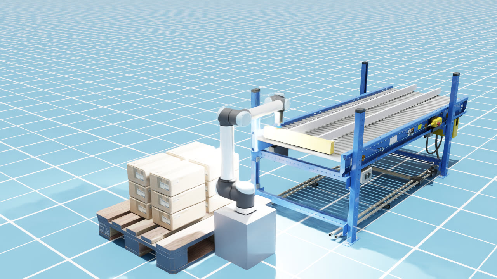

Projetos do LABRIOTLABRIOT projects
O Laboratório de Robótica e IoT da UTFPR Ponta Grossa leva robótica, gêmeos digitais e IA para problemas reais da saúde, da indústria e do clima. Cada projeto tem uma página aberta, com o que já foi feito e o que ainda falta.
The Robotics and IoT Lab at UTFPR Ponta Grossa, Brazil, brings robotics, digital twins and AI to real problems in health, industry and weather. Each project has an open page with what has been done and what is still missing.
Eventos e atividadesEvents and activities
Onde estamosWhere we are
Onde o LABRIOT apresenta os seus projetos. A lista cresce a cada participação e fica como histórico.
Where LABRIOT presents its projects. The list grows with each event and stays as a record.
- 25nov · 2026Nov · 2026PróximoUpcoming
Prêmio IoT ABINC 2026ABINC IoT Award 2026
inovabra habitat, São Paulo (SP)
inovabra habitat, São Paulo, Brazil
Cerimônia de premiação da 8ª edição. O IGM é finalista; os vencedores de cada categoria são anunciados ao vivo.
Award ceremony of the 8th edition. IGM is a finalist; the winners of each category are announced live.
- 17h00AberturaOpening
- 17h30Apresentação dos finalistas e anúncio dos vencedoresFinalists' presentations and winners announced
- 27nov · 2026Nov · 2026PróximoUpcoming
IA Summit Passo FundoIA Summit Passo Fundo
UPF Parque, Passo Fundo (RS)
UPF Parque, Passo Fundo, Brazil
A Dra. Itamar Iliuk é palestrante principal, com um workshop, um painel e a palestra da noite, que mostra os quatro projetos do LABRIOT.
Dr. Itamar Iliuk is a keynote speaker, with a workshop, a panel and the evening keynote, which shows all four LABRIOT projects.
- 09h00Workshop Digital Twin Hands-on · Arena, Prédio 3Digital Twin Hands-on workshop · Arena, Building 3
- 16h45Painel “Do prompt à empresa autônoma” · Stage Valley, Prédio 1Panel “From prompt to autonomous company” · Stage Valley, Building 1
- 19h30Palestra principal “Como gêmeos digitais criam empresas mais inteligentes, rápidas e eficientes” · Stage Valley, Prédio 1Keynote “How digital twins make companies smarter, faster and more efficient” · Stage Valley, Building 1
- 13nov · 2026Nov · 2026RealizadoPast
AI Safety Meetup BrazilAI Safety Meetup Brazil
Oracle Innovation Center, São Paulo (SP), com transmissão online
Oracle Innovation Center, São Paulo, Brazil, also streamed online
Palestra sobre segurança por construção em robótica e gêmeos digitais, com os casos do UR10 e da saúde, seguida de mesa-redonda.
Talk on safety by design in robotics and digital twins, with the UR10 and healthcare cases, followed by a round table.
- 19h50Palestra “Segurança na implementação de robótica e digital twins”Talk “Safety in deploying robotics and digital twins”
- 20h10Mesa-redondaRound table
- 7out · 2026Oct · 2026RealizadoPast
Webinar “Do Gêmeo Digital à Fábrica Inteligente”Webinar “From Digital Twin to Smart Factory”
Fórum Sistemas Embarcados e IoT 2026 · online
Embedded Systems and IoT Forum 2026 · online
Palestra de uma hora sobre IA, robótica e edge computing com NVIDIA: do CAD ao gêmeo digital em OpenUSD, treino com dados sintéticos e execução na borda.
One-hour talk on AI, robotics and edge computing with NVIDIA: from CAD to an OpenUSD digital twin, training on synthetic data and running at the edge.
- DemoCélula de paletização com UR10, fechando em Jetson OrinUR10 palletizing cell, deployed on Jetson Orin
- DemoRobô móvel Nova Carter em armazém, fechando em Jetson ThorNova Carter mobile robot in a warehouse, deployed on Jetson Thor

ICU-GuardBot
Um robô de beira de leito que ajuda a enfermagem da UTI a perceber cedo sinais de sepse. Desenvolvido primeiro em simulação, com NVIDIA Isaac Sim e Omniverse.
A bedside robot that helps ICU nurses notice early signs of sepsis. Developed simulation-first with NVIDIA Isaac Sim and Omniverse.
Ver o projeto →See the project →
Industrial Gauge Monitor (IGM)
Transforma os manômetros analógicos já instalados em sensores conectados: câmera de baixo custo, NVIDIA Cosmos rodando dentro da planta e a pressão no SCADA, sem trocar o instrumento.
Turns the analog pressure gauges already installed into connected sensors: a low-cost camera, NVIDIA Cosmos running inside the plant and the pressure in SCADA, without replacing the instrument.
Ver o projeto →See the project →
Digital Twin Hands-on
Uma célula de paletização com UR10 que aprendeu a tarefa no NVIDIA Isaac Lab e foi conferida no software do controlador da Universal Robots, mais os materiais abertos do workshop.
A UR10 palletizing cell that learned the task in NVIDIA Isaac Lab and was checked in the Universal Robots controller software, plus the open workshop materials.
Ver o projeto →See the project →
Earth-2 RS
O que o FourCastNet 3, do NVIDIA Earth-2, teria visto dias antes do temporal de Tupanciretã de 20/11/2026 e da enchente de maio de 2024 no Rio Grande do Sul.
What FourCastNet 3, from NVIDIA Earth-2, would have seen days before the November 20, 2026 storm in Tupanciretã and the May 2024 flood in Rio Grande do Sul.
Ver o projeto →See the project →O LABRIOT é membro do NVIDIA Inception program e é coordenado pela Dra. Itamar Iliuk, NVIDIA Omniverse Ambassador. Quer levar um destes projetos para a sua empresa, hospital ou cidade? Fale com a gente no LinkedIn.
LABRIOT is a member of the NVIDIA Inception program and is led by Dr. Itamar Iliuk, NVIDIA Omniverse Ambassador. Want to bring one of these projects to your company, hospital or city? Reach out on LinkedIn.